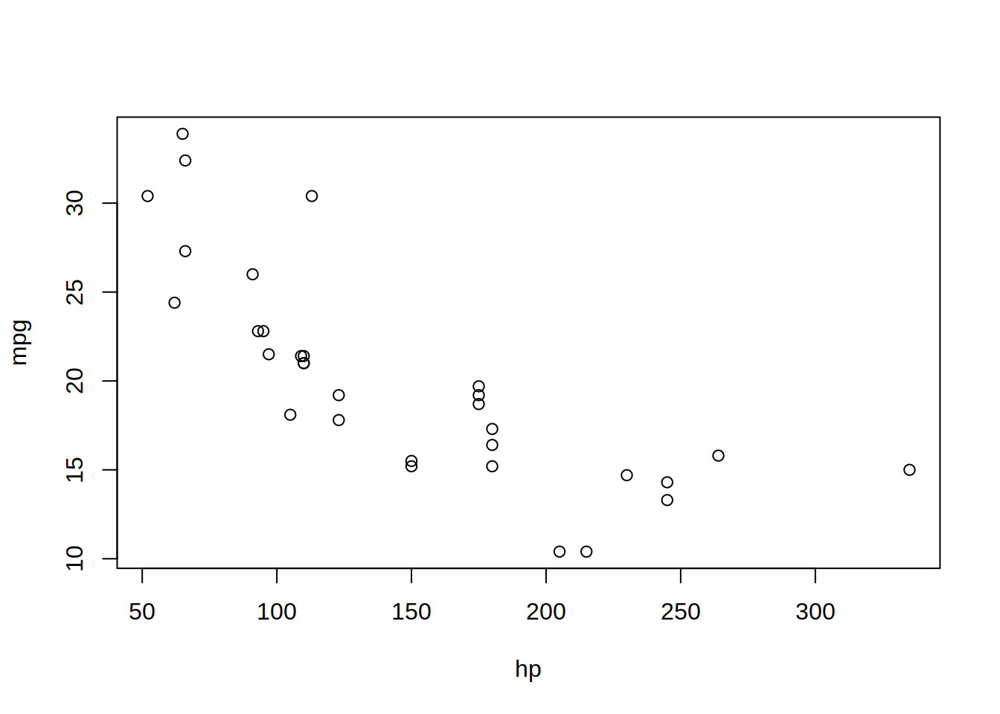
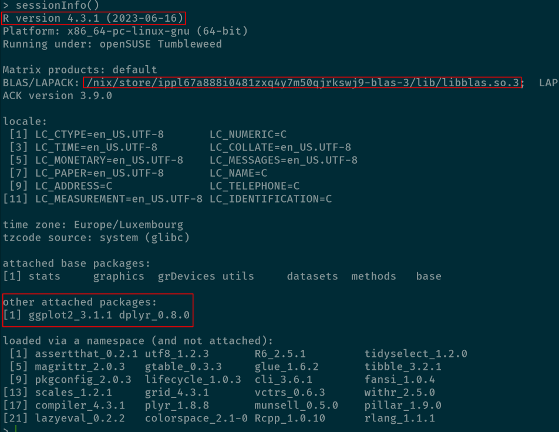

Reproducible data science with Nix, part 4 – So long, {renv} and Docker, and thanks for all the fish

For this blog post, I also made a youtube video that goes over roughly the same ideas, but the blog post is more detailed as I explain the contents of default.nix files, which I don’t do in the video. Watch the video here.
This is the fourth post in a series of posts about Nix. Disclaimer: I’m a super beginner with Nix. So this series of blog posts is more akin to notes that I’m taking while learning than a super detailed Nix tutorial. So if you’re a Nix expert and read something stupid in here, that’s normal. This post is going to focus on R (obviously) but the ideas are applicable to any programming language.
If you’ve never heard of Nix, take a look at part 1.
In this blog post I will go over many, nitty-gritty details and explain, line by line, what a Nix expression you can use to build an environment for your projects contains. In practice, building such an environment allows you to essentially replace {renv}+Docker, but writing the right expressions to achieve it is not easy. So this blog post will also go over the features of {rix}, an R package by Philipp Baumann and myself.
Let me also address the click-bait title directly. Yes, the title is click-bait and I got you. I don’t believe that {renv} and Docker are going away any time soon and you should not hesitate to invest the required time to get to know and use these tools (I wrote something by the way). But I am more and more convinced that Nix is an amazing alternative that offers many possibilities, albeit with a high entry cost. By writing {rix}, we aimed at decreasing this entry cost as much as possible. However, more documentation, examples, etc., need to be written and more testing is required. This series of blog posts is a first step to get the word out and get people interested in the package and more broadly in Nix. So if you’re interested or intrigued, don’t hesitate to get in touch!
This will be a long and boring post. Unless you really want to know how all of this works go watch the Youtube video, which is more practical instead. I needed to write this down, as it will likely serve as documentation. I’m essentially beta testing it with you, so if you do take the time to read, and even better, to try out the code, please let us know how it went! Was it clear, was it simple, was it useful? Many thanks in advance.
Part 1: starting a new project with Nix
Let’s suppose that you don’t even have R installed on your computer yet. Maybe you bought a new computer, or changed operating system, whatever. Maybe you even have R already, which you installed from the installer that you can download from the R project website. It doesn’t matter, as we are going to install a (somewhat) isolated version of R using Nix for the purposes of this blog post. If you don’t know where to start, it’s simple: first, use the installer from Determinate Systems. This installer will make it easy to install Nix on Linux, macOS or Windows (with WSL2). Once you have Nix installed, you can use it to install R and {rix} to start building reproducible development environments. To help you get started, you can run this line here (as documented in {rix}’s Readme), which will drop you into a Nix shell with R and {rix} available. Run the line inside a terminal (if you’re running Windows, run this in a Linux distribution that you installed for WSL2):
nix-shell --expr "$(curl -sl https://raw.githubusercontent.com/b-rodrigues/rix/master/inst/extdata/default.nix)"
This will take a bit to run, and then you will be inside an R session. This environment is not suited for development, but is only provided as an easy way for you to start using {rix}. Using {rix}, you can now use it to create a more complex environment suited for a project that you would like to start. Let’s start by loading {rix}:
library(rix)Now you can run the following command to create an environment with the latest version of R and some packages (change the R version and list of packages to suit your needs):
path_default_nix <- "path/to/my/project"
rix(r_ver = "current",
r_pkgs = c("dplyr", "ggplot2"),
other_pkgs = NULL,
git_pkgs = list(package_name = "housing",
repo_url = "https://github.com/rap4all/housing",
branch_name = "fusen",
commit = "1c860959310b80e67c41f7bbdc3e84cef00df18e"),
ide = "rstudio",
project_path = path_default_nix,
overwrite = TRUE)
Running the code above will create the following default.nix file in path/to/my/project:
# This file was generated by the {rix} R package on Sat Aug 12 22:18:55 2023
# with following call:
# >rix(r_ver = "cf73a86c35a84de0e2f3ba494327cf6fb51c0dfd",
# > r_pkgs = c("dplyr",
# > "ggplot2"),
# > other_pkgs = NULL,
# > git_pkgs = list(package_name = "housing",
# > repo_url = "https://github.com/rap4all/housing",
# > branch_name = "fusen",
# > commit = "1c860959310b80e67c41f7bbdc3e84cef00df18e"),
# > ide = "rstudio",
# > project_path = path_default_nix,
# > overwrite = TRUE)
# It uses nixpkgs' revision cf73a86c35a84de0e2f3ba494327cf6fb51c0dfd for reproducibility purposes
# which will install R as it was as of nixpkgs revision: cf73a86c35a84de0e2f3ba494327cf6fb51c0dfd
# Report any issues to https://github.com/b-rodrigues/rix
{ pkgs ? import (fetchTarball "https://github.com/NixOS/nixpkgs/archive/cf73a86c35a84de0e2f3ba494327cf6fb51c0dfd.tar.gz") {} }:
with pkgs;
let
my-r = rWrapper.override {
packages = with rPackages; [
dplyr
ggplot2
(buildRPackage {
name = "housing";
src = fetchgit {
url = "https://github.com/rap4all/housing";
branchName = "fusen";
rev = "1c860959310b80e67c41f7bbdc3e84cef00df18e";
sha256 = "sha256-s4KGtfKQ7hL0sfDhGb4BpBpspfefBN6hf+XlslqyEn4=";
};
propagatedBuildInputs = [
dplyr
ggplot2
janitor
purrr
readxl
rlang
rvest
stringr
tidyr
];
})
];
};
my-rstudio = rstudioWrapper.override {
packages = with rPackages; [
dplyr
ggplot2
(buildRPackage {
name = "housing";
src = fetchgit {
url = "https://github.com/rap4all/housing";
branchName = "fusen";
rev = "1c860959310b80e67c41f7bbdc3e84cef00df18e";
sha256 = "sha256-s4KGtfKQ7hL0sfDhGb4BpBpspfefBN6hf+XlslqyEn4=";
};
propagatedBuildInputs = [
dplyr
ggplot2
janitor
purrr
readxl
rlang
rvest
stringr
tidyr
];
})
];
};
in
mkShell {
LOCALE_ARCHIVE = "${glibcLocales}/lib/locale/locale-archive";
buildInputs = [
my-r
my-rstudio
];
}Let’s go through it. The first thing you will notice is that this file is written in a language that you might not know: this language is called Nix as well! So Nix can both refer to the package manager, but also to the programming language. The Nix programming language was designed for creating and composing derivations. A derivation is Nix jargon for a package (not necessarily an R package; any piece of software that you can install through Nix is a package). To know more about the language itself, you can RTFM.
Let’s go back to our default.nix file. The first lines state the revision of nixpkgs used that is being used in this expression, as well as which version of R gets installed through it. nixpkgs is Nix’s repository which contains all the software that we will be installing. This is important to understand: since all the expressions that build all the software available through nixpkgs are versioned on Github, it is possible to choose a particular commit, or revision, and use that particular release of nixpkgs. So by judiciously choosing the right commit, it’s possible to install any version of R (well any version until 3.0.2). {rix} takes care of this for you: state the version of R that is needed, and the right revision will be returned (the list of R versions and revisions can be found here).
The call that was used to generate the default.nix file is also saved, but if you look at the argument r_ver, the nixpkgs revision is specified instead of “current”. This is because if you re-run this call but keep r_ver = “current”, another, more recent nixpkgs revision will get used instead, which will break reproducibility. To avoid this, the expression gets changed, so if you re-run it, you’re sure to find the exact same environment.
Then comes this line:
{ pkgs ? import (fetchTarball "https://github.com/NixOS/nixpkgs/archive/cf73a86c35a84de0e2f3ba494327cf6fb51c0dfd.tar.gz") {} }:
This actually defines a function with argument pkgs that is optional (hence the ?). All that follows, import (fetchTarball … ) {} is the default value for pkgs if no argument is provided when you run this (which will always be the case). So here, if I call this function without providing any pkgs argument, the release of nixpkgs at that commit will be used. Then comes:
with pkgs;
let
my-pkgs = rWrapper.override {
packages = with rPackages; [
dplyr
ggplot2
The with pkgs statement makes all the imported packages available in the scope of the function. So I can write quarto if I want to install Quarto (the program that compiles .qmd files, not the {quarto} R package that provides bindings to it) instead of nixpkgs.quarto. Actually, R also has with(), so you can write this:
with(mtcars, plot(mpg ~ hp))
instead of this:
plot(mtcars$mpg ~ mtcars$hp)
Then follows a let … in. This is how a variable gets defined locally, for example, this is a valid Nix statement:
let x = 1; y = 2; in x + y
which will obviously return 3. So here we are defining a series of packages that will ultimately be available in our environment. These packages are named my-pkgs and are a list of R packages. You can see that I use a wrapper called rWrapper which changes certain options to make R installed through Nix work well. This wrapper has a packages attribute which I override using its .override method, and then I redefine packages as a list of R packages. Just like before, I use with rPackages before listing them, which allows me to write dplyr instead of rPackages.dplyr to refer to the {dplyr} packages. R packages that have a . character in their name must be written using _, so if you need {data.table} you’ll need to write data_table (but {rix} does this for you as well, so don’t worry). Then follows the list of R packages available through nixpkgs (which is the entirety of CRAN:
packages = with rPackages; [
dplyr
ggplot2
Each time you need to add a package, add it here, and rebuild your environment, do not run install.packages(blabla) to install the {blabla} package, because it’s likely not going to work anyways, and it’s not reproducible. Your projects need to be entirely defined as code. This also means that packages that have helper functions that install something, for example tinytex::install_tinytex(), cannot be used anymore. Instead, you will need to install texlive (by putting it in other_pkgs) and rebuild the expression. We plan to write vignettes documenting all these use-cases. For example, my blog is still built using Hugo (and will likely stay like this forever). I’m using a very old version of Hugo to generate it (I don’t want to upgrade and have to deal with potential issues), so I install the right version I need using Nix, instead of using blogdown::install_hugo().
Then comes the expression that installs a package from Github:
(buildRPackage {
name = "housing";
src = fetchgit {
url = "https://github.com/rap4all/housing";
branchName = "fusen";
rev = "1c860959310b80e67c41f7bbdc3e84cef00df18e";
sha256 = "sha256-s4KGtfKQ7hL0sfDhGb4BpBpspfefBN6hf+XlslqyEn4=";
};
propagatedBuildInputs = [
dplyr
ggplot2
janitor
purrr
readxl
rlang
rvest
stringr
tidyr
];
})As you can see it’s quite a mouthful, but it was generated from this R code only:
git_pkgs = list(package_name = "housing",
repo_url = "https://github.com/rap4all/housing",
branch_name = "fusen",
commit = "1c860959310b80e67c41f7bbdc3e84cef00df18e"),If you want to install more than one package, you can also provide a list of lists, for example:
git_pkgs = list(
list(package_name = "housing",
repo_url = "https://github.com/rap4all/housing/",
branch_name = "fusen",
commit = "1c860959310b80e67c41f7bbdc3e84cef00df18e"),
list(package_name = "fusen",
repo_url = "https://github.com/ThinkR-open/fusen",
branch_name = "main",
commit = "d617172447d2947efb20ad6a4463742b8a5d79dc")
),
...
and the right expressions will be generated. There’s actually a lot going on here, so let me explain. The first thing is the sha256 field. This field contains a hash that gets generated by Nix, and that must be provided by the user. But users rarely, if ever, know this value, so instead what they do is they try to build the expression without providing it. An error message like this one gets returned:
error: hash mismatch in fixed-output derivation '/nix/store/449zx4p6x0yijym14q3jslg55kihzw66-housing-1c86095.drv':
specified: sha256-AAAAAAAAAAAAAAAAAAAAAAAAAAAAAAAAAAAAAAAAAAA=
got: sha256-s4KGtfKQ7hL0sfDhGb4BpBpspfefBN6hf+XlslqyEn4=
The sha256 can now get copy-and-pasted into the expression. This approach is called “Trust On First Use”, or TOFU for short. Because this is quite annoying, {rix} provides a “private” function, called get_sri_hash_deps() that generates this hash for you. The issue is that this hash cannot be computed easily if you don’t have Nix installed, and since I don’t want to force users to install Nix to use {rix}, what I did is that I set up a server with Nix installed and a {plumber} api. get_sri_hash_deps() makes a call to that api and gets back the sha256, and also a list of packages (more on this later).
You can try making a call to the api if you have curl installed on your system:
curl -X GET "http://git2nixsha.dev:1506/hash?repo_url=https://github.com/rap4all/housing/&branchName=fusen&commit=1c860959310b80e67c41f7bbdc3e84cef00df18e" -H "accept: */*"This is what you will get back:
{
"sri_hash" : ["sha256-s4KGtfKQ7hL0sfDhGb4BpBpspfefBN6hf+XlslqyEn4="],
"deps" : ["dplyr ggplot2 janitor purrr readxl rlang rvest stringr tidyr"]
}
The reason computing sri_hash is not easy is because it gets computed on the folder containing the source code (after having deleted the .git folder in the case of a Github repo) after it was serialised. You are certainly familiar with serialisations such as the ZIP or TAR serialisation (in other words, zipping a folder is “serialising” it). But these serialisation algorithms come with certain shortcomings that I won’t discuss here, but if you’re interested check out section 5.2. The Nix store from Eelco Dolstra’s Phd thesis which you can find here. Instead, a Nix-specific serialisation algorithm was developed, called NAR. So to compute this hash, I either had to implement this serialisation algorithm in R, or write an api that does that for me by using the implementation that ships with Nix. Since I’m not talented enough to implement such an algorithm in R, I went for the api. But who knows, maybe in the future this could be done. There are implementation of this algorithm in other programming languages like Rust, so maybe packaging the Rust binary could be an option.
This gets then further processed by rix(). The second thing that gets returned is a list of packages. These get scraped from the Imports and LinkingTo sections of the DESCRIPTION file from the package and are then provided as the propagatedBuildInputs in the Nix expression. These packages are dependencies that must be available to your package at build and run-time.
You should know that as of today ({rix} commit 15cadf7f) GitHub packages that use the Remotes field (so that have dependencies that are also on Github) are not handled by {rix}, but supporting this is planned. What {rix} supports though is installing packages from the CRAN archives, so you can specify a version of a package and have that installed. For example:
rix(r_ver = "current",
r_pkgs = c("dplyr@0.8.0", "ggplot2@3.1.1"),
other_pkgs = NULL,
git_pkgs = NULL,
ide = "other",
path = path_default_nix,
overwrite = TRUE)
The difference with the default.nix file from before is that these packages get downloaded off the CRAN archives, so fetchzip() is used to download them instead of fetchgit() (both Nix functions). Here is what the generated Nix code looks like:
(buildRPackage {
name = "dplyr";
src = fetchzip {
url = "https://cran.r-project.org/src/contrib/Archive/dplyr/dplyr_0.8.0.tar.gz";
sha256 = "sha256-f30raalLd9KoZKZSxeTN71PG6BczXRIiP6g7EZeH09U=";
};
propagatedBuildInputs = [
assertthat
glue
magrittr
pkgconfig
R6
Rcpp
rlang
tibble
tidyselect
BH
plogr
Rcpp
];
})
(buildRPackage {
name = "ggplot2";
src = fetchzip {
url = "https://cran.r-project.org/src/contrib/Archive/ggplot2/ggplot2_3.1.1.tar.gz";
sha256 = "sha256-0Qv/5V/XMsFBcGEFy+3IAaBJIscRMTwGong6fiP5Op0=";
};
propagatedBuildInputs = [
digest
gtable
lazyeval
MASS
mgcv
plyr
reshape2
rlang
scales
tibble
viridisLite
withr
];
})Here’s what this looks like:

This feature should ideally be used sparingly. If you want to reconstruct an environment as it was around a specific date (for example to run an old project), use the version of R that was current at that time. This will ensure that every package that gets installed is at a version compatible with that version of R, which might not be the case if you need to install a very old version of one particular package. But this feature is quite useful if you want to install a package that is not available on CRAN anymore, but that is archived, like {ZeligChoice}.
Then a second list of packages gets defined, this time using the rstudioWrapper wrapper. This is because I specified that I wanted to use RStudio, but RStudio is a bit peculiar. It redefines many paths and so if you have RStudio installed in your system, it won’t be able to “see” the R installed through Nix. So you have to install RStudio through Nix as well (this is not necessary for VS Code nor Emacs, and likely not for other editors as well). However, it is still necessary to provide each package, again, to the rstudioWrapper. This is because the RStudio installed through Nix is also not able to “see” the R installed through Nix as well. But don’t worry, this does not take twice the space, since the packages simply get symlinked.
The last part of the expression uses mkShell which builds a shell with the provided buildInputs (our list of packages). There is also a line to define the location of the locale archive, which should properly configure the locale of the shell (so language, time zone and units):
in
mkShell {
LOCALE_ARCHIVE = "${glibcLocales}/lib/locale/locale-archive";
buildInputs = [
my-r
my-rstudio
];
}With this file in hand, we can now build the environment and use it.
Part 2: using your environment
So let’s suppose that you have a default.nix file and you wish to build the environment. To do so, you need to have Nix installed, and, thanks to the contributions of Philipp Baumann, you can use rix::nix_build() to build the environment as well:
nix_build(project_path = path_default_nix, exec_mode = "blocking")
If you prefer, you can use Nix directly as well; navigate to the project folder containing the default.nix file and run the command line tool nix-build that gets installed with Nix:
nix-build
This will take some time to run, depending on whether cached binary packages can be pulled from https://cache.nixos.org/ or not. Once the build process is done, you should see a file called result next to the default.nix file. You can now drop into the Nix shell by typing this into your operating system’s terminal (after you navigated to the folder containing the default.nix and result files):
nix-shell(this time, you really have to leave your current R session! But Philipp and myself are thinking about how we could also streamline this part as well…).
The environment that you just built is not an entirely isolated environment: you can still interact with your computer, unlike with Docker. For example, you can still use programs that are installed on your computer. This means that you can run your usual editor as well, but starting it from the Nix shell will make your editor be able to “see” the R installed in that environment. You need to be careful with this, because sometimes this can lead to surprising behavior. For example, if you already have R installed with some packages, these packages could interfere with your Nix environment. There are two ways of dealing with this: you either only use Nix-based environments to work (which would be my primary recommendation, as there can be no interference between different Nix environments), or you call nix-shell –pure instead of just nix-shell. This will ensure that only whatever is available in the environment gets used, but be warned that Nix environments are very, very lean, so you might need to add some tools to have something completely functional.
We can take advantage of the fact that environments are not completely isolated to use our IDEs. For example, if you use VS Code or Emacs, you can use the one that is installed directly on your system, as explained before. As already explained, but to drive the point home, if you’re an RStudio user, you need to specify the ide = “rstudio” argument to rix(), because in the case of RStudio, it needs to be installed by Nix as well (the current available RStudio version installed by Nix is now out of date, but efforts are ongoing to update it). This is because RStudio looks for R runtimes in very specific paths, and these need to be patched to see Nix-provided R versions. Hence the version that gets installed by Nix gets patched so that RStudio is able to find the correct runtimes.
Once you dropped into the shell, simply type rstudio to launch RStudio in that environment (or code if you use VS Code or other if you use Emacs, or any other editor). On Linux, RStudio may fail to launch with this error message:
Could not initialize GLX
Aborted (core dumped)
change your default.nix file from this:
mkShell {
LOCALE_ARCHIVE = "${glibcLocales}/lib/locale/locale-archive";
buildInputs = [
my-r
my-rstudio
];
}to this:
mkShell {
LOCALE_ARCHIVE = "${glibcLocales}/lib/locale/locale-archive";
buildInputs = [
my-r
my-rstudio
];
shellHook = ''
export QT_XCB_GL_INTEGRATION=none
'';
}which should solve the issue, which is related to hardware acceleration as far as I can tell.
shellHooks are a nice feature which I haven’t discussed a lot yet (I did so in part 2 of this series, to run a {targets} pipeline each time I dropped into the shell). Whatever goes into the shellHook gets executed as soon as one drops into the Nix shell. I personally have to add the export QT_XCB_GL_INTEGRATION=none line in on virtual machines and on my desktop computer as well, but I’ve had problems in the past with my graphics drivers, and I think it’s related. I’m planning also to add an option to rix() to add this automatically.
If you need to add packages, best is to call rix::rix() again, but this time, provide the nixpkgs revision as the argument to r_ver. Copy and paste the call from the generated default.nix to an R console and rerun it:
rix(r_ver = "cf73a86c35a84de0e2f3ba494327cf6fb51c0dfd",
r_pkgs = c("dplyr", "ggplot2", "tidyr", "quarto"),
other_pkgs = "quarto",
git_pkgs = list(package_name = "housing",
repo_url = "https://github.com/rap4all/housing",
branch_name = "fusen",
commit = "1c860959310b80e67c41f7bbdc3e84cef00df18e"),
ide = "rstudio",
path = path_default_nix,
overwrite = TRUE)
In the call above I’ve added the {tidyr} and {quarto} packages, as well as the quarto command line utility to generate .qmd files. For r_ver I’m this time using the nixpkgs revision from my original default.nix file. This will ensure that my environment stays the same.
So if you have read up until this point, let me first thank you, and secondly humbly ask you to test {rix}! I’m looking for testers, especially on Windows and macOS, and would be really grateful if you could provide some feedback on the package. To report anything, simply open issue here.
Thanks to Philipp for proof-reading this post.